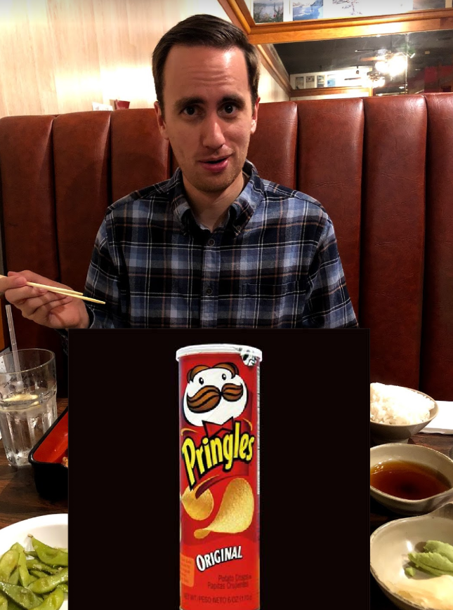

Matt's Pringle Predicament
Why on God's green earth are Pringles SO addicting?

This is Matt. He has a problem. Every time his lovely wife comes home with a Pringle love note, he scarfs them down like there's no tomorrow. Why is this?
Here might be a few reasons:
- Pringles are bad for you. Things that are bad for you taste delicious. Thus, Pringles are delicious.
- Once you POP, the fun don't STOP? More like once you STACK, you're hooked like CRACK.
- Based on a scientifically-backed research study conducted by Amanda, Pringles, are indeed, CRACK.